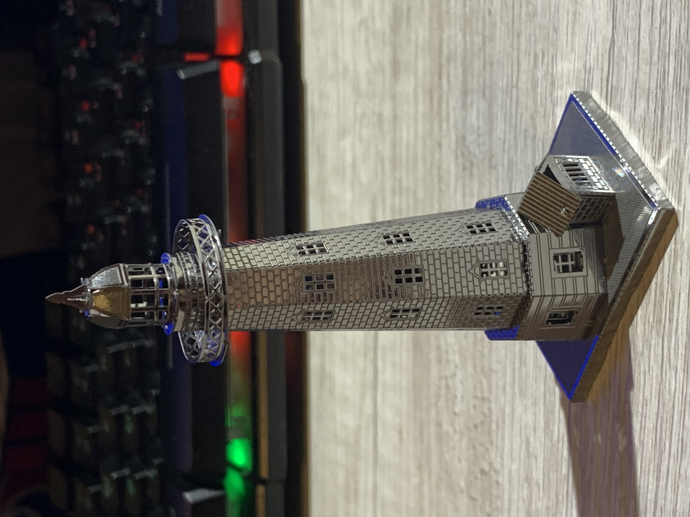
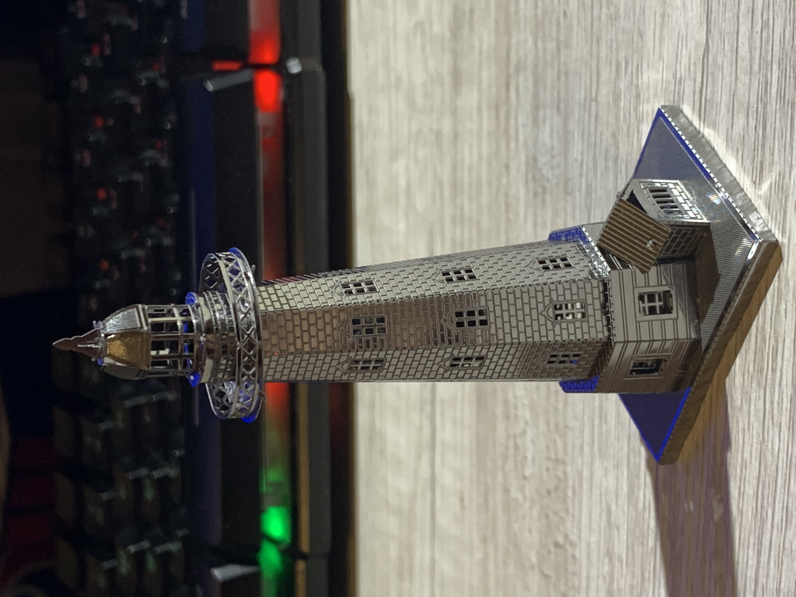

Howdy! My name is Dominic Johnson and I am a 22 year old aspiring web developer. I enjoy playing video games and engaging in activities that require me to think critically. Puzzles and building exercises, yes that includes LEGOs, are a few of my favorite things to spend my time doing.
Below are some of the things I have spent a portion of my time putting together/building. My favorites would have to be the train and the marble run. Both are completely made out of wood and fully functional! You can wind up the gears in the train and set it on a track just like an old antique train would be able to do.


 
